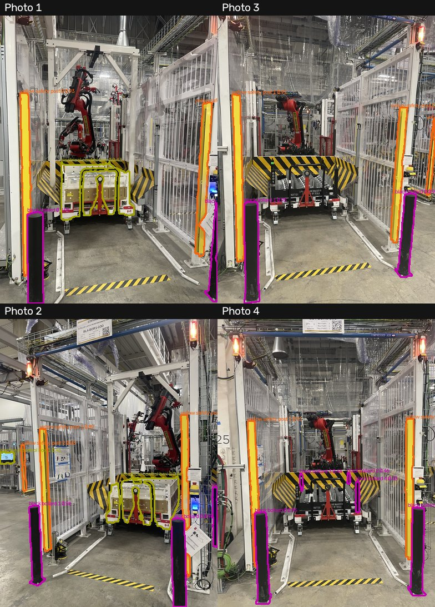

正在加载模型…
照片投影：模型按几何相机放回照片。旋转 3D：拖动旋转，滚轮缩放。照片经过模型输入尺寸缩放；未手工摆正模型。
四张照片的原始分割检查
蓝色是机器人，绿色是围栏，紫色的“work platform”误含地面，未用于建模。

第二轮：防护柱词表

运输车：检测框与实际分割
黄色为自动检测框，红色为 SAM 3 掩码。照片 4 只有车前部被分出。

正在加载模型…
照片投影：模型按几何相机放回照片。旋转 3D：拖动旋转，滚轮缩放。照片经过模型输入尺寸缩放；未手工摆正模型。
蓝色是机器人，绿色是围栏，紫色的“work platform”误含地面，未用于建模。

黄色为自动检测框，红色为 SAM 3 掩码。照片 4 只有车前部被分出。